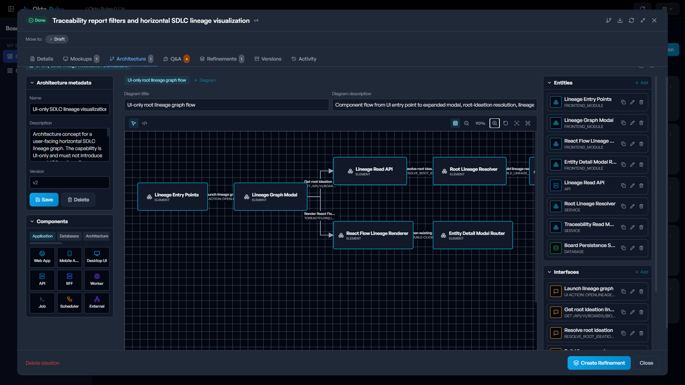
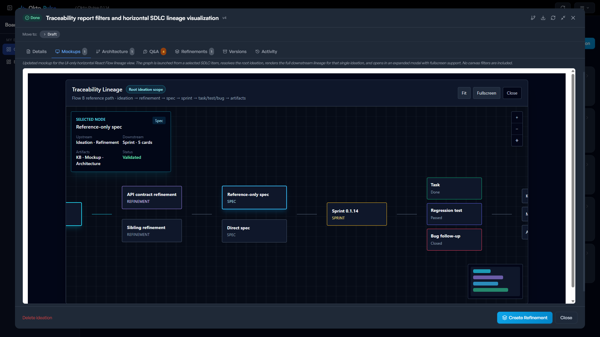
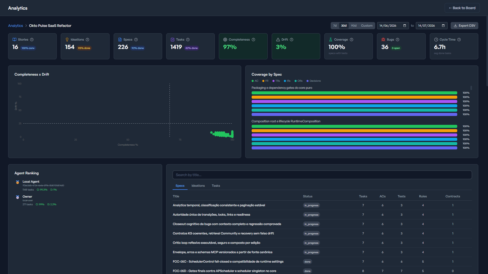
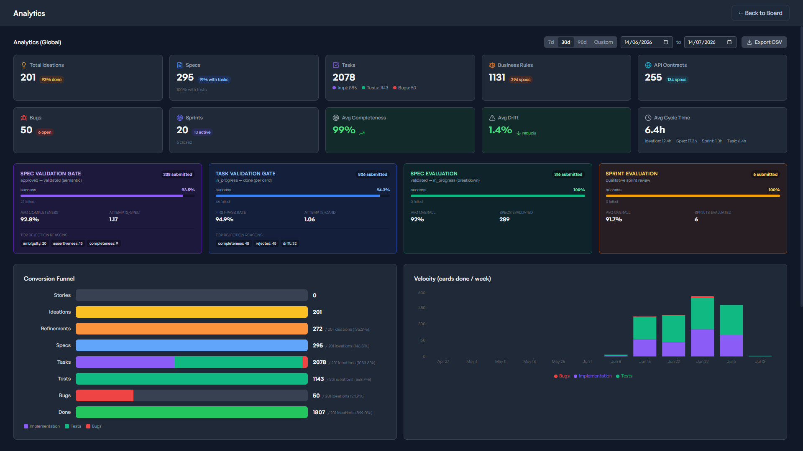
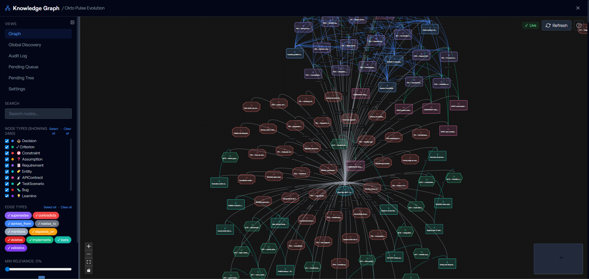

Context gets lost
Long-running work turns into disconnected prompts, partial memory, and repeated explanations.
From idea to production — with specs, validation, and evidence. Okto Pulse is the control plane for AI-assisted software development: structure the work, guide your agents, and prove what was actually delivered.
AI assistants can generate code. They do not guarantee that requirements were implemented, decisions were preserved, tests covered what matters, or the system behaves as intended.
Long-running work turns into disconnected prompts, partial memory, and repeated explanations.
Architecture, trade-offs, and constraints live in chat history instead of the project system.
Agents can move quickly while drifting away from the original requirement and acceptance criteria.
Done means “it seems to work” instead of evidence tied to requirements, tests, and delivery.
You ship faster. But you stop knowing what you shipped.
intent.status="unclear"
spec.coverage="unknown"
task.drift="rising"
delivery.evidence="missing"Okto Pulse sits between your idea and your code, bringing structure, traceability, and validation to every step. It turns AI from a coding assistant into an engineering participant.
A reliability layer for AI-assisted development: specs, tasks, validation, analytics, and project memory in one controlled system.
Define before building. Structure before coding. Validate before shipping. Learn after delivery.
Capture ideas and evaluate complexity, ambiguity, risk, and dependencies.
Turn vague intent into technically grounded, actionable concepts.
Define requirements, rules, contracts, architecture, mockups, and acceptance criteria.
Break work into structured, traceable execution units for humans and agents.
Ensure coverage, test evidence, completion integrity, and drift control.
Persist decisions, learnings, constraints, and context for future initiatives.
The goal is not to slow AI down. The goal is to let it move fast inside a system that preserves intent, evidence, and accountability.
The board is only one surface. Okto Pulse also models architecture, screen mockups, acceptance criteria, tests, analytics, and the knowledge graph that survives delivery.
Architecture diagrams are captured inside the ideation flow, so agents inherit system structure, integration points, and component boundaries before implementation begins.

Mockups keep interaction behavior, visual structure, and user-facing intent attached to the same workflow that produces specs and tasks.

Spec detail connects acceptance criteria, tests, rules, contracts, drift, and cycle time so done work can be inspected instead of assumed.

Tasks are not loose cards. They carry ownership, status, priority, spec linkage, validation state, and the provenance needed for humans and agents to work on the same execution surface.
Coverage, drift, tests, rules, contracts, and agent contribution stay visible after implementation starts. The system makes the cost of drift explicit instead of invisible.

Decisions, constraints, requirements, tests, bugs, and learnings remain connected. Each initiative leaves a better base of knowledge for the next one.

Okto Pulse is the layer that makes AI development reliable: not by replacing your tools, but by giving them a system to follow.
Your system is defined before it is built. Tasks inherit requirements, rules, contracts, and acceptance criteria.
AI assistants operate inside structured roles and permissions, not free-form prompts with unlimited surface area.
No task is done without evidence. Validation becomes a workflow, not a subjective status.
Decisions, constraints, requirements, tests, bugs, and learnings are never lost after delivery.
Specs can carry system diagrams and screen mockups so implementation starts from shared visual context.
From requirement to code to test to delivery, every artifact has a path back to intent.
Turn your assistant into a structured engineering partner with specs, tasks, and validation gates.
Ship faster while preserving traceability, coverage, and decision history across initiatives.
Start structured even when building solo, then scale the same system as the product grows.
Use Okto Pulse alongside Claude Code, Cursor, Windsurf, Cline, or any MCP-compatible agent. With 190+ MCP tools, your AI does not just generate code. It follows a system.
{
"mcpServers": {
"okto-pulse": {
"url": "http://127.0.0.1:8101/mcp?api_key=dash_xxx"
}
}
}No account. No cloud dependency. Install locally, initialize the board, and connect your agent when you are ready.
pip install okto-pulse
okto-pulse init
okto-pulse serve
Open the URL printed by the server and start structuring your workflow. Add the generated .mcp.json when your agent should join.
Free to use · Source-available under Elastic License 2.0
This is a new layer in the development stack: a control plane for AI-assisted development.
Start structuring your AI-assisted development today.